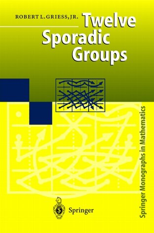

Noncontinuous
Groups
by Steven H. Cullinane
A group of geometric transformations, all of which are continuous, may
be called a discrete group or discontinuous
group when
the group is finite.
(Do web searches for "discrete group" and "discontinuous group" for
finer shades of meaning.)
What, then, should a finite group of geometric transformations, some of
which are discontinuous, be called?
The phrase "noncontinous group" seems apt.
Examples of noncontinuous groups:
Groups of discrete versions of chaotic maps (cf. Wikipedia
articles).
The diamond theorem
Finite
geometry of
the square and cube
Pattern
groups
Ivars Peterson on "Scrambled
Grids" (Aug. 28, 2000)
The Mathieu group M24 acting on the Miracle Octad Generator of R. T. Curtis. This is on the cover of Griess's Twelve Sporadic
Groups—

Page created October 16,
2009